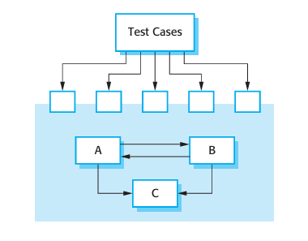
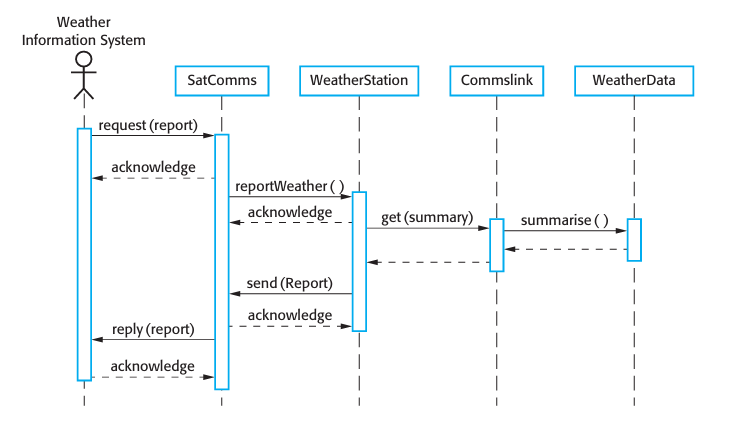
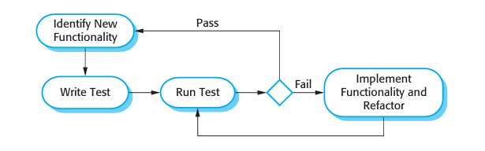
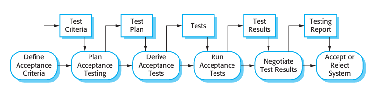

C8
Objectives
The objective of this chapter is to introduce software testing and software testing processes. When you have read the chapter, you will:
- understand the stages of testing from testing, during development to acceptance testing by system customers;
- have been introduced to techniques that help you choose test cases that are geared to discovering program defects;
- understand test-first development, where you design tests before writing code and run these tests automatically;
- know the important differences between component, system,and release testing and be aware of user testing processes andtechniques.
Contents
8.1 Development testing
8.2 Test-driven development
8.3 Release testing
8.4 User testing
Testing is intended to show that a program does what it is intended to do and to discover program defects before it is put into use. When you test software, you execute a program using artificial data. You check the results of the test run for errors, anomalies, or information about the program’s non-functional attributes.The testing process has two distinct goals
1. To demonstrate to the developer and the customer that the software meets its requirements. For custom software, this means that there should be at least one test for every requirement in the requirements document. For generic software products, it means that there should be tests for all of the system features, plus combinations of these features, that will be incorporated in the product release.
2. To discover situations in which the behavior of the software is incorrect, undesirable, or does not conform to its specification. These are a consequence of software defects. Defect testing is concerned with rooting out undesirable system behavior such as system crashes, unwanted interactions with other systems,incorrect computations, and data corruption.
The first goal leads to validation testing, where you expect the system to perform correctly using a given set of test cases that reflect the system’s expected use. Thesecond goal leads to defect testing, where the test cases are designed to expose defects. The test cases in defect testing can be deliberately obscure and need not reflect how the system is normally used. Of course, there is no definite boundary between these two approaches to testing. During validation testing, you will find defects in the system; during defect testing, some of the tests will show that the program meets its requirements.
The diagram shown in Figure 8.1 may help to explain the differences between validation testing and defect testing. Think of the system being tested as a blackbox. The system accepts inputs from some input set I and generates outputs in anoutput set O. Some of the outputs will be erroneous. These are the outputs in set Oe that are generated by the system in response to inputs in the set Ie. The priority indefect testing is to find those inputs in the set Ie because these reveal problems withthe system. Validation testing involves testing with correct inputs that are outside Ie.These stimulate the system to generate the expected correct outputs.
Testing cannot demonstrate that the software is free of defects or that it willbehave as specified in every circumstance. It is always possible that a test that youhave overlooked could discover further problems with the system. As Edsger Dijkstra, an early contributor to the development of software engineering, eloquently stated (Dijkstra et al., 1972):
Testing can only show the presence of errors, not their absence
Testing is part of a broader process of software verification and validation (V & V).Verification and validation are not the same thing, although they are often confused.

Barry Boehm, a pioneer of software engineering, succinctly expressed the differencebetween them (Boehm, 1979):
Verification and Validation
- ‘Validation: Are we building the right product?’
- ‘Verification: Are we building the product right?’
Verification and validation processes are concerned with checking that software being developed meets its specification and delivers the functionality expected by the people paying for the software. These checking processes start as soon as requirements become available and continue through all stages of the development process.
The aim of verification is to check that the software meets its stated functional andnon-functional requirements. Validation, however, is a more general process. The aimof validation is to ensure that the software meets the customer’s expectations. It goesbeyond simply checking conformance with the specification to demonstrating that the software does what the customer expects it to do. Validation is essential because, as I discussed in Chapter 4, requirements specifications do not always reflect the real wishes or needs of system customers and users.
The ultimate goal of verification and validation processes is to establish confidence that the software system is ‘fit for purpose’. This means that the system must be good enough for its intended use. The level of required confidence depends on thesystem’s purpose, the expectations of the system users, and the current marketing environment for the system:
1. Software purpose The more critical the software, the more important that it is reliable. For example, the level of confidence required for software used to control a safety-critical system is much higher than that required for a prototype that has been developed to demonstrate new product ideas.
2. User expectations Because of their experiences with buggy, unreliable software,many users have low expectations of software quality. They are not surprised when their software fails. When a new system is installed, users may tolerate failures because the benefits of use outweigh the costs of failure recovery.In these situations, you may not need to devote as much time to testing the software. However, as software matures, users expect it to become more reliable so more thorough testing of later versions may be required

3. Marketing environment When a system is marketed, the sellers of the system must take into account competing products, the price that customers are willing to pay for a system, and the required schedule for delivering that system.
As well as software testing, the verification and validation process may involvesoftware inspections and reviews. Inspections and reviews analyze and check the system requirements, design models, the program source code, and even proposed system tests. These are so-called ‘static’ V & V techniques in which you don’t needto execute the software to verify it. Figure 8.2 shows that software inspections and testing support V & V at different stages in the software process.
1. During testing, errors can mask (hide) other errors. When an error leads toun expected outputs, you can never be sure if later output anomalies are due toa new error or are side effects of the original error. Because inspection is astatic process, you don’t have to be concerned with interactions between errors. Consequently, a single inspection session can discover many errors in asystem
Test Planning
Test planning is concerned with scheduling and resourcing all of the activities in the testing process. It involves defining the testing process, taking into account the people and the time available. Usually, a test plan will be created, which defines what is to be tested, the predicted testing schedule, and how tests will be recorded. For critical systems, the test plan may also include details of the tests to be run on the software
http://www.SoftwareEngineering-9.com/Web/Testing/Planning.html
2. Incomplete versions of a system can be inspected without additional costs. If a program is incomplete, then you need to develop specialized test harnesses to test the parts that are available. This obviously adds to the system development costs.
3. As well as searching for program defects, an inspection can also consider broader quality attributes of a program, such as compliance with standards, portability, and maintainability. You can look for inefficiencies, inappropriate algorithms, and poor programming style that could make the system difficult tomaintain and update
Program inspections are an old idea and there have been several studies and experiments that have demonstrated that inspections are more effective for defect discovery than program testing. Fagan (1986) reported that more than 60% of the errors in a program can be detected using informal program inspections.

Typically, a commercial software system has to go through three stages of testing:
1. Development testing, where the system is tested during development to discoverbugs and defects. System designers and programmers are likely to be involved in the testing process.
2. Release testing, where a separate testing team tests a complete version of thesystem before it is released to users. The aim of release testing is to check that the system meets the requirements of system stakeholders.
3. User testing, where users or potential users of a system test the system in their own environment. For software products, the ‘user’ may be an internal marketing group who decide if the software can be marketed, released, and sold. Acceptance testing is one type of user testing where the customer formally tests a system to decide if it should be accepted from the system supplier or if further development is required.
8.1 Development Testing
Development testing includes all testing activities that are carried out by the team developing the system. The tester of the software is usually the programmer who developed that software, although this is not always the case. Some development processes use programmer/tester pairs (Cusamano and Selby, 1998) where each
Debugging
Debugging is the process of fixing errors and problems that have been discovered by testing. Using information from the program tests, debuggers use their knowledge of the programming language and the intended outcome of the test to locate and repair the program error. This process is often supported by interactive debugging tools that provide extra information about program execution.
http://www.SoftwareEngineering-9.com/Web/Testing/Debugging.html
Programmer has an associated tester who develops tests and assists with the testing process. For critical systems, a more formal process may be used, with a separate testing group within the development team.
1. Unit testing, where individual program units or object classes are tested. Unit testing should focus on testing the functionality of objects or methods.
2. Component testing, where several individual units are integrated to create composite components. Component testing should focus on testing component interfaces.
3. System testing, where some or all of the components in a system are integrated and the system is tested as a whole. System testing should focus on testing component interactions.
Development testing is primarily a defect testing process, where the aim of testing is to discover bugs in the software. It is therefore usually interleaved with debugging—the process of locating problems with the code and changing the program to fix these problems
8.1.1 Unit testing
Unit testing is the process of testing program components, such as methods or object classes. Individual functions or methods are the simplest type of component. Your tests should be calls to these routines with different input parameters. You can use the approaches to test case design discussed in Section 8.1.2, to design the function or method tests.
When you are testing object classes, you should design your tests to provide coverage of all of the features of the object. This means that you should:
- -test all operations associated with the object;
- -set and check the value of all attributes associated with the object;
- -put the object into all possible states. This means that you should simulate all events that cause a state change

Generalization or inheritance makes object class testing more complicated. You can’t simply test an operation in the class where it is defined and assume that it will work as expected in the subclasses that inherit the operation. The operation that is inherited may make assumptions about other operations and attributes.
Shutdown → Running→ Shutdown
Configuring → Running→ Testing → Transmitting→ Running
Running → Collecting → Running → Summarizing→ Transmitting→ Running
An automated test has three parts:
1. A setup part, where you initialize the system with the test case, namely the inputs and expected outputs.
2. A call part, where you call the object or method to be tested.
3. An assertion part where you compare the result of the call with the expected result. If the assertion evaluates to true, the test has been successful; if false, then it has failed
Sometimes the object that you are testing has dependencies on other objects that may not have been written or which slow down the testing process if they are used. For example, if your object calls a database, this may involve a slow setup process before it can be used. In these cases, you may decide to use mock objects. Mock objects are objects with the same interface as the external objects being used that simulate its functionality. Therefore, a mock object simulating a database may have only a few data items that are organized in an array.
8.1.2 Choosing unit test cases
Testing is expensive and time consuming, so it is important that you choose effective unit test cases. Effectiveness, in this case, means two things:
1. The test cases should show that, when used as expected, the component that you are testing does what it is supposed to do.
2. If there are defects in the component, these should be revealed by test cases.
You should therefore write two kinds of test case. The first of these should reflect normal operation of a program and should show that the component works. For example, if you are testing a component that creates and initializes a new patient record, then your test case should show that the record exists in a database and that its fields have been set as specified. The other kind of test case should be based on testing experience of where common problems arise. It should use abnormal inputs to check that these are properly processed and do not crash the component.
I discuss two possible strategies here that can be effective in helping you choose test cases. These are:
1. Partition testing, where you identify groups of inputs that have common characteristics and should be processed in the same way. You should choose tests from within each of these groups.
1. Guideline-based testing, where you use testing guidelines to choose test cases. These guidelines reflect previous experience of the kinds of errors that programmers often make when developing components.

The input data and output results of a program often fall into a number of different classes with common characteristics. Examples of these classes are positive numbers, negative numbers, and menu selections. Programs normally behave in a comparable way for all members of a class. That is, if you test a program that does a computation and requires two positive numbers, then you would expect the program to behave in the same way for all positive numbers.

You identify partitions by using the program specification or user documentation and from experience where you predict the classes of input value that are likely to detect errors. For example, say a program specification states that the program accepts 4 to 8 inputs which are five-digit integers greater than 10,000. You use this information to identify the input partitions and possible test input values. These are shown in Figure 8.6.
When you use the specification of a system to identify equivalence partitions, this is called ‘black-box testing’. Here, you don’t need any knowledge of how the system works. However, it may be helpful to supplement the black-box tests with ‘whitebox testing’, where you look at the code of the program to find other possible tests. For example, your code may include exceptions to handle incorrect inputs.
Equivalence partitioning is an effective approach to testing because it helps account for errors that programmers often make when processing inputs at the edges of partitions. You can also use testing guidelines to help choose test cases. Guidelines encapsulate knowledge of what kinds of test cases are effective for discovering errors. For example, when you are testing programs with sequences, arrays, or lists, guidelines that could help reveal defects include
- Test software with sequences that have only a single value. Programmers naturally think of sequences as made up of several values and sometimes they embed this assumption in their programs. Consequently, if presented with a single value sequence, a program may not work properly.
- Use different sequences of different sizes in different tests. This decreases the chances that a program with defects will accidentally produce a correct output because of some accidental characteristics of the input.
- Derive tests so that the first, middle, and last elements of the sequence are accessed. This approach is reveals problems at partition boundaries
Path testing
Path testing is a testing strategy that aims to exercise every independent execution path through a component or program. If every independent path is executed, then all statements in the component must have been executed at least once. All conditional statements are tested for both true and false cases. In an object-oriented development process, path testing may be used when testing the methods associated with objects.
http://www.SoftwareEngineering-9.com/Web/Testing/PathTest.html
Whittaker’s book (2002) includes many examples of guidelines that can be used in test case design. Some of the most general guidelines that he suggests are:
- -Choose inputs that force the system to generate all error messages;
- -Design inputs that cause input buffers to overflow;
- -Repeat the same input or series of inputs numerous times;
- -Force invalid outputs to be generated;
- -Force computation results to be too large or too small.
As you gain experience with testing, you can develop your own guidelines about how to choose effective test cases. I give more examples of testing guidelines in the next section of this chapter.
8.1.3 Component testing
Software components are often composite components that are made up of several interacting objects. For example, in the weather station system, the reconfiguration component includes objects that deal with each aspect of the reconfiguration. You access the functionality of these objects through the defined component interface. Testing composite components should therefore focus on showing that the component interface behaves according to its specification.
- Parameter interfaces - These are interfaces in which data or sometimes function references are passed from one component to another. Methods in an object have a parameter interface.

- Shared memory interfaces - These are interfaces in which a block of memory is shared between components. Data is placed in the memory by one subsystem and retrieved from there by other sub-systems. This type of interface is often used in embedded systems, where sensors create data that is retrieved and processed by other system components.
- Procedural interfaces - These are interfaces in which one component encapsulates a set of procedures that can be called by other components. Objects and reusable components have this form of interface.
- Message passing interfaces - These are interfaces in which one component requests a service from another component by passing a message to it. A return message includes the results of executing the service. Some object-oriented systems have this form of interface, as do client–server systems
Interface errors are one of the most common forms of error in complex systems (Lutz, 1993). These errors fall into three classes:
- Interface misuse- A calling component calls some other component and makes an error in the use of its interface. This type of error is common with parameter interfaces, where parameters may be of the wrong type or be passed in the wrong order, or the wrong number of parameters may be passed.
- Interface misunderstanding- A calling component misunderstands the specification of the interface of the called component and makes assumptions about its behavior. The called component does not behave as expected which then causes unexpected behavior in the calling component. For example, a binary search method may be called with a parameter that is an unordered array. The search would then fail.
- Timing errors-These occur in real-time systems that use a shared memory or a message-passing interface. The producer of data and the consumer of data may operate at different speeds. Unless particular care is taken in the interface design, the consumer can access out-of-date information because the producer of the information has not updated the shared interface information.
Testing for interface defects is difficult because some interface faults may only manifest themselves under unusual conditions. For example, say an object implements a queue as a fixed-length data structure. A calling object may assume that the queue is implemented as an infinite data structure and may not check for queue overflow when an item is entered. This condition can only be detected during testing by designing test cases that force the queue to overflow and cause that overflow to corrupt the object behavior in some detectable way.
A further problem may arise because of interactions between faults in different modules or objects. Faults in one object may only be detected when some other object behaves in an unexpected way. For example, an object may call another object to receive some service and assume that the response is correct. If the called service is faulty in some way, the returned value may be valid but incorrect. This is not immediately detected but only becomes obvious when some later computation goes wrong. Some general guidelines for interface testing are:
-
Examine the code to be tested and explicitly list each call to an external component. Design a set of tests in which the values of the parameters to the external components are at the extreme ends of their ranges. These extreme values are most likely to reveal interface inconsistencies.
- Where pointers are passed across an interface, always test the interface with null pointer parameters.
- Where a component is called through a procedural interface, design tests that deliberately cause the component to fail. Differing failure assumptions are one of the most common specification misunderstandings.
- Use stress testing in message passing systems. This means that you should design tests that generate many more messages than are likely to occur in practice. This is an effective way of revealing timing problems.
- Where several components interact through shared memory, design tests that vary the order in which these components are activated. These tests may reveal implicit assumptions made by the programmer about the order in which the shared data is produced and consumed.
Incremental integration and testing
System testing involves integrating different components then testing the integrated system that you have created. You should always use an incremental approach to integration and testing (i.e., you should integrate a component, test the system, integrate another component, test again, and so on). This means that if problems occur, it is probably due to interactions with the most recently integrated component. Incremental integration and testing is fundamental to agile methods such as XP, where regression tests (see Section 8.2) are run every time a new increment is integrated.
http://www.SoftwareEngineering-9.com/Web/Testing/Integration.html
8.1.4 System testing
System testing during development involves integrating components to create a version of the system and then testing the integrated system. System testing checks that components are compatible, interact correctly and transfer the right data at the right time across their interfaces. It obviously overlaps with component testing but there are two important differences
- During system testing, reusable components that have been separately developed and off-the-shelf systems may be integrated with newly developed components. The complete system is then tested.
- Components developed by different team members or groups may be integrated at this stage. System testing is a collective rather than an individual process. In some companies, system testing may involve a separate testing team with no involvement from designers and programmers
When you integrate components to create a system, you get emergent behavior. This means that some elements of system functionality only become obvious when you put the components together. This may be planned emergent behavior, which has to be tested. For example, you may integrate an authentication component with a component that updates information.
Therefore system testing should focus on testing the interactions between the components and objects that make up a system. You may also test reusable components or systems to check that they work as expected when they are integrated with new components. This interaction testing should discover those component bugs that are only revealed when a component is used by other components in the system. Interaction testing also helps find misunderstandings, made by component developers, about other components in the system.

SatComms:request→>WeatherStation:reportWeather→Commslink:Get(summary)>→WeatherData:summarize
The sequence diagram helps you design the specific test cases that you need as it shows what inputs are required and what outputs are created:
- An input of a request for a report should have an associated acknowledgment. A report should ultimately be returned from the request. During testing, you should create summarized data that can be used to check that the report is correctly organized.
- An input request for a report to WeatherStation results in a summarized report being generated. You can test this in isolation by creating raw data corresponding to the summary that you have prepared for the test of SatComms and checking that the WeatherStation object correctly produces this summary. This raw data is also used to test the WeatherData object.
Alternatively, they may be based on experience of system usage and focus on testing the features of the operational system. For example:
- All system functions that are accessed through menus should be tested.
- Combinations of functions (e.g., text formatting) that are accessed through the same menu must be tested.
- Where user input is provided, all functions must be tested with both correct and incorrect input.
It is clear from experience with major software products such as word processors or spreadsheets that similar guidelines are normally used during product testing. When features of the software are used in isolation, they normally work. Problems arise, as Whittaker (2002) explains, when combinations of less commonly used features have not been tested together. He gives the example of how, in a commonly used word processor, using footnotes with a multicolumn layout causes incorrect layout of the text.
8.2 Test-driven development
Test-driven development (TDD) is an approach to program development in which you interleave testing and code development (Beck, 2002; Jeffries and Melnik, 2007). Essentially, you develop the code incrementally, along with a test for that increment. You don’t move on to the next increment until the code that you have developed passes its test. Test-driven development was introduced as part of agile methods such as Extreme Programming. However, it can also be used in plan-driven development processes

- You start by identifying the increment of functionality that is required. This should normally be small and implementable in a few lines of code
- You write a test for this functionality and implement this as an automated test. This means that the test can be executed and will report whether or not it has passed or failed
- You then run the test, along with all other tests that have been implemented. Initially, you have not implemented the functionality so the new test will fail. This is deliberate as it shows that the test adds something to the test set.
- You then implement the functionality and re-run the test. This may involve refactoring existing code to improve it and add new code to what’s already there.
- Once all tests run successfully, you move on to implementing the next chunk of functionality
An automated testing environment, such as the JUnit environment that supports Java program testing (Massol and Husted, 2003), is essential for TDD. As the code is developed in very small increments, you have to be able to run every test each time that you add functionality or refactor the program. Therefore, the tests are embedded in a separate program that runs the tests and invokes the system that is being tested. Using this approach, it is possible to run hundreds of separate tests in a few seconds.
A strong argument for test-driven development is that it helps programmers clarify their ideas of what a code segment is actually supposed to do. To write a test, you need to understand what is intended, as this understanding makes it easier to write the required code. Of course, if you have incomplete knowledge or understanding, then test-driven development won’t help. If you don’t know enough to write the tests, you won’t develop the required code. For example, if your computation involves division, you should check that you are not dividing the numbers by zero. If you forget to write a test for this, then the code to check will never be included in the program.
As well as better problem understanding, other benefits of test-driven development are:
- Code coverage In principle, every code segment that you write should have at least one associated test. Therefore, you can be confident that all of the code in the system has actually been executed. Code is tested as it is written so defects are discovered early in the development process.
- Regression testing A test suite is developed incrementally as a program is developed. You can always run regression tests to check that changes to the program have not introduced new bugs.
- Simplified debugging When a test fails, it should be obvious where the problem lies. The newly written code needs to be checked and modified. You do not need to use debugging tools to locate the problem. Reports of the use of test-driven development suggest that it is hardly ever necessary to use an automated debugger in test-driven development (Martin, 2007).
- System documentation The tests themselves act as a form of documentation that describe what the code should be doing. Reading the tests can make it easier to understand the code.
One of the most important benefits of test-driven development is that it reduces the costs of regression testing. Regression testing involves running test sets that have successfully executed after changes have been made to a system. The regression test checks that these changes have not introduced new bugs into the system and that the new code interacts as expected with the existing code. Regression testing is very expensive and often impractical when a system is manually tested, as the costs in time and effort are very high. In such situations, you have to try and choose the most relevant tests to re-run and it is easy to miss important tests.
However, automated testing, which is fundamental to test-first development, dramatically reduces the costs of regression testing. Existing tests may be re-run
quickly and cheaply. After making a change to a system in test-first development, all
existing tests must run successfully before any further functionality is added. As a
programmer, you can be confident that the new functionality that you have added has
not caused or revealed problems with existing code.
Test-driven development is of most use in new software development where the
functionality is either implemented in new code or by using well-tested standard
libraries. If you are reusing large code components or legacy systems then you need
to write tests for these systems as a whole. Test-driven development may also be
ineffective with multi-threaded systems. The different threads may be interleaved at
different times in different test runs, and so may produce different results.
If you use test-driven development, you still need a system testing process to validate the system; that is, to check that it meets the requirements of all of the system
stakeholders. System testing also tests performance, reliability, and checks that the
system does not do things that it shouldn’t do, such as produce unwanted outputs,
etc. Andrea (2007) suggests how testing tools can be extended to integrate some
aspects of system testing with TDD.
Test-driven development has proved to be a successful approach for small and
medium-sized projects. Generally, programmers who have adopted this approach are
happy with it and find it a more productive way to develop software (Jeffries and Melnik, 2007). In some trials, it has been shown to lead to improved code quality; in
others, the results have been inconclusive. However, there is no evidence that TDD leads to poorer quality code.
8.3 Release testing
Release testing is the process of testing a particular release of a system that is
intended for use outside of the development team. Normally, the system release is for
customers and users. In a complex project, however, the release could be for other
teams that are developing related systems. For software products, the release could
be for product management who then prepare it for sale.
There are two important distinctions between release testing and system testing
during the development process:
- A separate team that has not been involved in the system development should be responsible for release testing.
- System testing by the development team should focus on discovering bugs in thesystem (defect testing). The objective of release testing is to check that the system meets its requirements and is good enough for external use (validation testing).
The primary goal of the release testing process is to convince the supplier of the
system that it is good enough for use. If so, it can be released as a product or deliv
ered to the customer. Release testing, therefore, has to show that the system delivers
its specified functionality, performance, and dependability, and that it does not fail
during normal use. It should take into account all of the system requirements, not
just the requirements of the end-users of the system.
Release testing is usually a black-box testing process where tests are derived from
the system specification. The system is treated as a black box whose behavior can
only be determined by studying its inputs and the related outputs. Another name for
this is ‘functional testing’, so-called because the tester is only concerned with func
tionality and not the implementation of the software.
8.3.1 Requirements-based testing
A general principle of good requirements engineering practice is that requirements should be testable; that is, the requirement should be written so that a test can be designed for that requirement. A tester can then check that the requirement has been satisfied. Requirements-based testing, therefore, is a systematic approach to test case design where you consider each requirement and derive a set of tests for it. Requirements-based testing is validation rather than defect testing—you are trying to demonstrate that the system has properly implemented its requirements.
For example, consider related requirements for the MHC-PMS (introduced in Chapter 1), which are concerned with checking for drug allergies:
If a patient is known to be allergic to any particular medication, then prescription
of that medication shall result in a warning message being issued to the
system user.
If a prescriber chooses to ignore an allergy warning, they shall provide a
reason why this has been ignored.
To check if these requirements have been satisfied, you may need to develop several related tests:
- Set up a patient record with no known allergies. Prescribe medication for aller gies that are known to exist. Check that a warning message is not issued by the system.
- Set up a patient record with a known allergy. Prescribe the medication to that the patient is allergic to, and check that the warning is issued by the system.
- Set up a patient record in which allergies to two or more drugs are recorded. Prescribe both of these drugs separately and check that the correct warning for each drug is issued.
- Prescribe two drugs that the patient is allergic to. Check that two warnings are correctly issued.
- Prescribe a drug that issues a warning and overrule that warning. Check that the system requires the user to provide information explaining why the warning wasoverruled.
You can see from this that testing a requirement does not mean just writing a single test. You normally have to write several tests to ensure that you have coverage of the requirement. You should also maintain traceability records of your requirements based testing, which link the tests to the specific requirements that are being tested.
8.3.2 Scenario testing
Scenario testing is an approach to release testing where you devise typical scenarios
of use and use these to develop test cases for the system. A scenario is a story that
describes one way in which the system might be used. Scenarios should be realistic
and real system users should be able to relate to them. If you have used scenarios as
part of the requirements engineering process (described in Chapter 4), then you may
be able to reuse these as testing scenarios.
In a short paper on scenario testing, Kaner (2003) suggests that a scenario test
should be a narrative story that is credible and fairly complex. It should motivate
stakeholders; that is, they should relate to the scenario and believe that it is important

that the system passes the test. He also suggests that it should be easy to evaluate.
If there are problems with the system, then the release testing team should recognize
them. As an example of a possible scenario from the MHC-PMS, Figure 8.10
describes one way that the system may be used on a home visit.
It tests a number of features of the MHC-PMS:
- Authentication by logging on to the system.
- Downloading and uploading of specified patient records to a laptop.
- Home visit scheduling.
- Encryption and decryption of patient records on a mobile device.
- Record retrieval and modification.
- Links with the drugs database that maintains side-effect information.
- The system for call prompting.
If you are a release tester, you run through this scenario, playing the role of
Kate and observing how the system behaves in response to different inputs. As
‘Kate’, you may make deliberate mistakes, such as inputting the wrong key
phrase to decode records. This checks the response of the system to errors. You
should carefully note any problems that arise, including performance problems. If
a system is too slow, this will change the way that it is used. For example, if it
takes too long to encrypt a record, then users who are short of time may skip this
stage. If they then lose their laptop, an unauthorized person could then view thepatient records.
When you use a scenario-based approach, you are normally testing several require
ments within the same scenario. Therefore, as well as checking individual requirements,
you are also checking that combinations of requirements do not cause problems.
8.3.3 Performance testing
Once a system has been completely integrated, it is possible to test for emergent prop
erties, such as performance and reliability. Performance tests have to be designed to
ensure that the system can process its intended load. This usually involves running a
series of tests where you increase the load until the system performance becomesunacceptable.
As with other types of testing, performance testing is concerned both with
demonstrating that the system meets its requirements and discovering problems and
defects in the system. To test whether performance requirements are being
achieved, you may have to construct an operational profile. An operational profile
(see Chapter 15) is a set of tests that reflect the actual mix of work that will be han
dled by the system. Therefore, if 90% of the transactions in a system are of type A;
5% of type B; and the remainder of types C, D, and E, then you have to design the
operational profile so that the vast majority of tests are of type A. Otherwise, you
will not get an accurate test of the operational performance of the system.
This approach, of course, is not necessarily the best approach for defect testing.
Experience has shown that an effective way to discover defects is to design tests
around the limits of the system. In performance testing, this means stressing the sys
tem by making demands that are outside the design limits of the software. This is
known as ‘stress testing’. For example, say you are testing a transaction processing
system that is designed to process up to 300 transactions per second. You start by
testing this system with fewer than 300 transactions per second. You then gradually
increase the load on the system beyond 300 transactions per second until it is well
beyond the maximum design load of the system and the system fails. This type of testing has two functions:
- It tests the failure behavior of the system. Circumstances may arise through an unexpected combination of events where the load placed on the system exceeds the maximum anticipated load. In these circumstances, it is important that sys tem failure should not cause data corruption or unexpected loss of user services. Stress testing checks that overloading the system causes it to ‘fail-soft’ rather than collapse under its load.
- It stresses the system and may cause defects to come to light that would not normally be discovered. Although it can be argued that these defects are unlikely to cause system failures in normal usage, there may be unusual combinations of normal circumstances that the stress testing replicates.
Stress testing is particularly relevant to distributed systems based on a network of processors. These systems often exhibit severe degradation when they are heavily loaded. The network becomes swamped with coordination data that the different processes must exchange. The processes become slower and slower as they wait for the required data from other processes. Stress testing helps you discover when the degradation begins so that you can add checks to the system to reject transactionsbeyond this point
8.4 User testing
User or customer testing is a stage in the testing process in which users or customers
provide input and advice on system testing. This may involve formally testing a sys
tem that has been commissioned from an external supplier, or could be an informal
process where users experiment with a new software product to see if they like it and
that it does what they need. User testing is essential, even when comprehensive sys
tem and release testing have been carried out. The reason for this is that influences
from the user’s working environment have a major effect on the reliability, perfor
mance, usability, and robustness of a system.
It is practically impossible for a system developer to replicate the system’s work
ing environment, as tests in the developer’s environment are inevitably artificial. For
example, a system that is intended for use in a hospital is used in a clinical environ
ment where other things are going on, such as patient emergencies, conversations
with relatives, etc. These all affect the use of a system, but developers cannot include
them in their testing environment.
In practice, there are three different types of user testing:
- Alpha testing, where users of the software work with the development team to test the software at the developer’s site.
- Beta testing, where a release of the software is made available to users to allow them to experiment and to raise problems that they discover with the system developers.
- Acceptance testing, where customers test a system to decide whether or not it is ready to be accepted from the system developers and deployed in the customer environment.
In alpha testing, users and developers work together to test a system as it is being
developed. This means that the users can identify problems and issues that are not
readily apparent to the development testing team. Developers can only really work
from the requirements but these often do not reflect other factors that affect the prac
tical use of the software. Users can therefore provide information about practice that
helps with the design of more realistic tests.
Alpha testing is often used when developing software products that are sold as
shrink-wrapped systems. Users of these products may be willing to get involved in
the alpha testing process because this gives them early information about new sys
tem features that they can exploit. It also reduces the risk that unanticipated changes
to the software will have disruptive effects on their business. However, alpha testing
may also be used when custom software is being developed. Agile methods, such as
XP, advocate user involvement in the development process and that users should
play a key role in designing tests for the system.
Beta testing takes place when an early, sometimes unfinished, release of a soft
ware system is made available to customers and users for evaluation. Beta testers

may be a selected group of customers who are early adopters of the system.
Alternatively, the software may be made publicly available for use by anyone who is
interested in it. Beta testing is mostly used for software products that are used in
many different environments (as opposed to custom systems which are generally
used in a defined environment). It is impossible for product developers to know and
replicate all the environments in which the software will be used. Beta testing is
therefore essential to discover interaction problems between the software and fea
tures of the environment where it is used. Beta testing is also a form of marketing—
customers learn about their system and what it can do for them.
Acceptance testing is an inherent part of custom systems development. It takes
place after release testing. It involves a customer formally testing a system to decide
whether or not it should be accepted from the system developer. Acceptance implies
that payment should be made for the system.
There are six stages in the acceptance testing process, as shown in Figure 8.11.
They are:
- Define acceptance criteria - This stage should, ideally, take place early in the process before the contract for the system is signed. The acceptance criteria should be part of the system contract and be agreed between the customer and the developer. In practice, however, it can be difficult to define criteria so early in the process. Detailed requirements may not be available and there may be sig nificant requirements change during the development process.
- Plan acceptance testing - This involves deciding on the resources, time, and budget for acceptance testing and establishing a testing schedule. The accep tance test plan should also discuss the required coverage of the requirements and the order in which system features are tested. It should define risks to the testing process, such as system crashes and inadequate performance, and discuss how these risks can be mitigated.
- Derive acceptance tests - Once acceptance criteria have been established, tests have to be designed to check whether or not a system is acceptable. Acceptance tests should aim to test both the functional and non-functional characteristics (e.g., performance) of the system. They should, ideally, provide complete cover age of the system requirements. In practice, it is difficult to establish completely objective acceptance criteria. There is often scope for argument about whether or not a test shows that a criterion has definitely been met.
- Run acceptance tests - The agreed acceptance tests are executed on the system. Ideally, this should take place in the actual environment where the system will be used, but this may be disruptive and impractical. Therefore, a user testing environment may have to be set up to run these tests. It is difficult to automate this process as part of the acceptance tests may involve testing the interactions between end-users and the system. Some training of end-users may be required.
- Negotiate test results - It is very unlikely that all of the defined acceptance tests will pass and that there will be no problems with the system. If this is the case, then acceptance testing is complete and the system can be handed over. More com monly, some problems will be discovered. In such cases, the developer and the customer have to negotiate to decide if the system is good enough to be put into use. They must also agree on the developer’s response to identified problems.
- Reject/accept system - This stage involves a meeting between the developers and the customer to decide on whether or not the system should be accepted. If the system is not good enough for use, then further development is required to fix the identified problems. Once complete, the acceptance testing phase isrepeated.
In agile methods, such as XP, acceptance testing has a rather different meaning. In
principle, it shares the notion that users should decide whether or not the system is
acceptable. However, in XP, the user is part of the development team (i.e., he or she
is an alpha tester) and provides the system requirements in terms of user stories.
He or she is also responsible for defining the tests, which decide whether or not the
developed software supports the user story. The tests are automated and development
does not proceed until the story acceptance tests have passed. There is, therefore, no
separate acceptance testing activity.
As I have discussed in Chapter 3, one problem with user involvement is ensuring
that the user who is embedded in the development team is a ‘typical’ user with gen
eral knowledge of how the system will be used. It can be difficult to find such a user,
and so the acceptance tests may actually not be a true reflection of practice.
Furthermore, the requirement for automated testing severely limits the flexibility of
testing interactive systems. For such systems, acceptance testing may require groups
of end-users to use the system as if it was part of their everyday work.
You might think that acceptance testing is a clear-cut contractual issue. If a sys
tem does not pass its acceptance tests, then it should not be accepted and payment
should not be made. However, the reality is more complex. Customers want to use
the software as soon as they can because of the benefits of its immediate deploy
ment. They may have bought new hardware, trained staff, and changed their
processes. They may be willing to accept the software, irrespective of problems,
because the costs of not using the software are greater than the costs of working
around the problems. Therefore, the outcome of negotiations may be conditional
acceptance of the system. The customer may accept the system so that deployment
can begin. The system provider agrees to repair urgent problems and deliver a new
version to the customer as quickly as possible